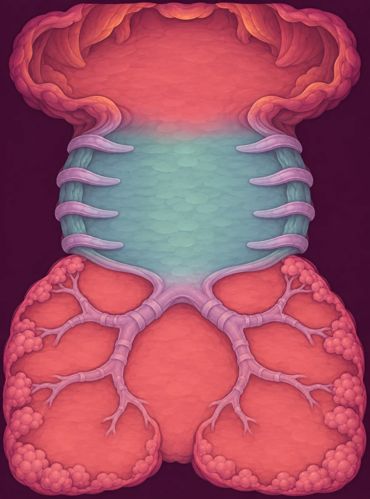

Atlas Viral · Fase respiratória
Influenza
Monte seu vírus e passe por quatro arenas do aparelho respiratório.
Arraste à esquerda para andar e à direita para mirar e atacar. No teclado, use WASD ou setas para andar e segure o mouse para atacar. Espaço ou Dash desvia.

Espaços e raridades
O envoltório tem espaços de ataque, pulso, defesa e apoio. Morfologia interna, reforço do nucleocapsídeo, acessório de movimento, status e patogenia também têm seus espaços. As ofertas aparecem depois de vencer a arena.
Comum e Super-rara aparecem nas primeiras ofertas. Habilidades de nível alto podem chegar a Épica ou Lendária. Fusões e poderes desbloqueados por desafios usam Especial.
Fusões descobertas
Replicação, defesa e profilaxia
Os fragmentos convocam ecos temporários que acompanham seus disparos. O Anel coletor aumenta o alcance da coleta. Nos brônquios, acerte uma pergunta no posto de profilaxia para ganhar um aliado de estudo por 14 s.
Nos pulmões, o pulso violeta causa dano no impacto. O campo dourado reduz a velocidade enquanto o personagem estiver dentro dele. São padrões de combate da arena.
Na influenza, anticorpos contra a hemaglutinina podem impedir a entrada do vírus na célula. Anticorpos contra a neuraminidase também podem proteger e limitar a liberação de partículas virais.
Antena de patogenia
Membrana firme e Impulso nível 2 podem abrir um desafio após a traqueia ou os brônquios. Acerte a pergunta para ganhar a antena do Eco inflamatório.
Na arena, o dash no instante do impacto de uma onda carrega o Super. Toque em Super ou pressione E para transformar o próximo disparo em um leque de três raios.
Na gripe, a lesão das células que revestem as vias aéreas e a inflamação ajudam a explicar a doença. Tosse e mal-estar estão entre os sintomas.
Área do núcleo
Ao vencer a orofaringe, responda a um desafio de morfologia para equipar um núcleo segmentado. Uma pergunta bônus dá acesso ao perfil de influenza e ao desafio do poder exclusivo.
Na arena, detectabilidade indica a distância a que a patrulha começa a perseguir o jogador. Variabilidade é a chance de sortear uma forma temporária ao chegar a outra arena. Essa forma muda o disparo ou a recarga do dash durante a sala.
Na virologia, os tipos A e B têm oito segmentos e causam epidemias sazonais. O tipo C tem sete segmentos e geralmente causa doença leve. Deriva antigênica é uma mudança gradual. Salto antigênico descreve uma mudança abrupta no tipo A.
Genomas segmentados · Tipos de influenza · CDC · Deriva e salto · CDC
VSR, sincícios e bronquiolite
O vírus sincicial respiratório pertence ao gênero Orthopneumovirus, família Pneumoviridae. Tem envoltório e RNA de fita simples negativa, não segmentado. Pode apresentar partículas arredondadas e filamentosas.
A proteína G participa da ligação à célula. A proteína F promove fusão de membranas e pode fazer células se fundirem, formando um sincício com vários núcleos.
O VSR pode causar sintomas de resfriado e também bronquiolite. Lactentes e idosos estão entre os grupos com maior risco de doença grave. As fichas da fase trazem um caso de bronquiolite e uma situação de prevenção para a equipe de saúde.
Genoma, capsídeo e envoltório
O influenza A tem RNA de fita simples negativa, segmentado. O VSR tem RNA de fita simples negativa, não segmentado.
O capsídeo é proteico e o envoltório é uma camada lipídica externa. Na arte do Atlas, o vírus flutua e pode ter fibras finas na superfície, inspiradas em estruturas de adesão.
Tropismo descreve quais células ou tecidos um vírus consegue infectar. A ligação à célula faz parte disso. A patogênese inclui o que a infecção e a resposta do hospedeiro provocam no organismo.
Os perfis selecionáveis são fictícios. A cor e o número de traços distinguem RNA e DNA. Os benefícios de dano, cadência e resistência servem ao equilíbrio da arena.
Revisão da fase
As perguntas trazem o tema e a dificuldade. As fichas ensinam virologia. Os poderes e as fusões fazem parte da ficção do jogo.
43 perguntas do Taller 14
Enunciados em espanhol para rever os temas da guia.
Pausa
Seus espaços nesta partida
Sua combinação
Perguntas desta partida